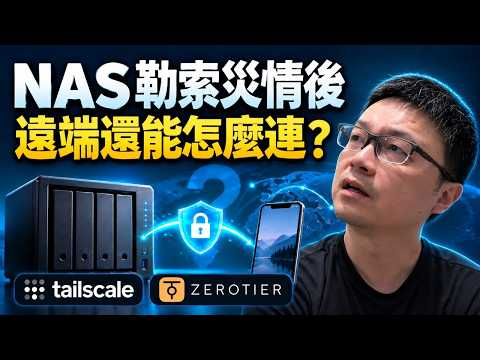

NAS 遠端連線怎麼選？VPN、Tailscale、ZeroTier 入門

影片封面：Wilson說給你聽；點圖前往 YouTube。
遠離勒索病毒：重新思考 NAS 遠端存取策略
將 NAS 放置在家庭網路中，雖然能享受資料備份與多裝置同步的便利，但當我們需要在外工作時，如何安全地連回家中的 NAS 便成為一大難題。許多使用者習慣直接在路由器上開啟通訊埠轉發（Port Forwarding），讓外部 IP 直接存取內部服務。然而，這會增加外部可接觸的服務面，風險取決於服務的設定、漏洞與防護。一旦 NAS 上的軟體存在漏洞，攻擊者可能掃描並利用可觸及的漏洞，因此需要評估暴露的服務。因此，改變遠端連線的思維，從「直接暴露服務」轉向「建立安全隧道」，是保護資料資產的第一步。
傳統 VPN 方案：路由器、WireGuard 與 OpenVPN
對於擁有公網 IP 的使用者而言，利用路由器內建的 VPN 伺服器是最經典且穩定的解決方案。常見的支持協議包括 WireGuard 與 OpenVPN。WireGuard 以其輕量、高效能及設定簡便著稱，特別適合對效能有要求的環境；而 OpenVPN 則因成熟穩定、相容性廣，仍是許多企業級應用的首選。
若您的網路環境支援公網 IP，可向網路業者確認是否提供可連入的公網位址及其申請方式，並在路由器上啟用 VPN 服務。這樣做的好處在於，受 VPN 保護的流量會經過加密隧道；實際路由和保護範圍取決於設定。不過，設定過程可能需要一定的網路知識，特別是當您需要處理動態 IP 或 DDNS 更新時，會增加一些維護成本。
無公網 IP 的救星：Tailscale 與 ZeroTier
並非所有家庭網路都能取得公網 IP，特別是在某些電信業者（如凱擘部分方案）採用大規模 NAT 的情況下，外部裝置無法直接連線至您的路由器。此時，基於 SD-WAN 技術的 Tailscale 和 ZeroTier 便成為極佳的替代方案。
Tailscale 利用 WireGuard 協議建立虛擬網域，透過中間伺服器協助穿透 NAT。它的最大優勢在於「降低設定門檻」，需安裝、登入並依存取政策授權裝置；實際配置依裝置與需求而異。對於一般家庭或小型辦公室使用者來說，Tailscale 能大幅降低遠端存取技術門檻，讓 NAS 彷彿就在本地網路中一樣易用。
ZeroTier 則提供類似的虛擬網段功能，允許不同裝置加入同一個邏輯網路。它特別適合需要模擬傳統 LAN 環境的情境，例如將分散各地的 NAS、伺服器與電腦視為同一個區域網路內的節點。兩者在安全性上皆使用加密連線保護資料傳輸，可以減少直接暴露 NAS 服務的需求，但仍須管理帳號、裝置與權限。
家用與商用需求選擇指南
在選擇遠端連線方案時，應根據實際使用情境進行評估。若您是家庭使用者，主要需求為偶爾存取照片或備份檔案，且希望快速上手，可評估 Tailscale 的操作方式與目前方案限制。若您對網路延遲敏感，或擁有公網 IP 並具備一定網路基礎，可評估路由器提供的 VPN，連線效能仍需實際測試。
對於商業應用或需要嚴格控管權限的環境，ZeroTier 的網段管理功能可能更為適合，它能更細緻地劃分虛擬網路區域。無論選擇哪種方案，核心原則都是「減少不必要的通訊埠開放」。透過加密隧道進行遠端存取，不僅能提升資料安全性，更無法取代軟體更新、權限管理、多因素驗證與可還原的離線或異地備份。
常見問題與總結
Q: 沒有公網 IP 就不能用路由器 VPN 嗎？ A: 沒有可連入的公網位址時，直接連入可能受限；仍可評估 IPv6、中繼、業者服務或 Tailscale、ZeroTier 等方案，視網路條件而定。
Q: 哪種方案最安全？ A: 沒有任何方案能保證安全；需同時考量更新、驗證、最小權限與備份。關鍵在於避免直接開放 NAS 的管理介面或檔案服務通訊埠至網際網路。
總結 NAS 遠端存取不應以犧牲安全性為代價。從直接開放通訊埠轉向 VPN 或虛擬網域技術，能有效降低勒索病毒風險。請依據自身網路條件與技術能力，選擇最適合的連線方式，讓資料存取既方便又安心。
參考影片：NAS 勒索災情後，遠端連線怎麼選？VPN、Tailscale、ZeroTier 一次看。文章依影片公開資訊整理，以本機 Ollama 撰寫並經編輯校對。